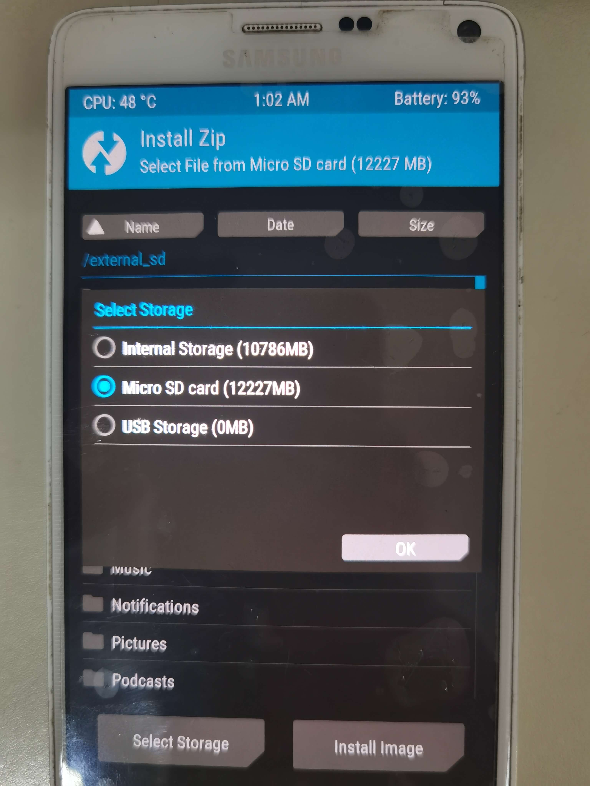

Samsung Galaxy Note 4(N9109W) - 救砖、ROOT、TWRP、刷机
俗话说：“常在河边走哪有不湿鞋”。刷机更是如此，这不上次一不小心就把N9109W弄成板砖了,一直停在下面的画面。不过恰好这次从板砖刷起，真是废了老鼻子劲儿了（其中的关键是需要找对一个线刷包）……
USB 驱动
之前还没有注意，重装电脑之后，在连接刷机之后的Samsung Galaxy Note 4时，电脑没有反应，没有驱动啊！赶紧记录一下下载地址：USB驱动
寻找线刷包
都变砖了，卡刷是不可能了，只能线刷了，因此首先找一个线刷包。之前我记得在三星官网还能找到，但是这次再去查找没有找到，不知道是不是没有找对地方……只能google，这里找到了一个地址还不错：Samsung GALAXY Note 4 Firmware Download SM-N9109W Free Download ,之后下载就好了。
2021-07-23 竟然又找到了官网的下载地址：Download Samsung GALAXY Note 4 SM-N9109W CTC China (China Telecom) N9109WKEU1DQD1 firmware
寻找刷机工具
之前习惯了使用奇兔刷机，感觉还不错，但是现在下载ROM好多都需要收费了，虽然郁闷但也没办法（毕竟需要生存），这不是关键，关键是刷机失败了（忘记了是不是使用的提到的网址了）……就开始寻找其他的工具了，找到了 odin 这个神器——一款用于三星手机刷机的软件。
开始救砖
进入挖煤模式
-
同时按住 ”音量-“+”HOME键“+”电源键“
-
按下 ”音量+“
手机连接电脑-》打开odin
操作
- AP或者PDA选择上面下载的线刷包（下载的是ZIP格式的，需要解压）
- "Options"选项卡-》去掉"F.Reset Time"
- 点击“Start”

重新认识一下你的手机
这里使用adb检测一些信息
adb shell
使用该命令可以得到这个值：trltechn。感觉像是电脑名称（或者像是进入linux终端），trlte这个前缀在后面的刷机过程中会经常看到，但是trltechn这个全称的信息有点少，chn感觉像是中国版……
查看手机型号
>adb shell
>getprop ro.product.model
也可以直接 >adb shell getprop ro.product.model
查看CPU位数
>adb shell
>getprop ro.product.cpu.abi
也可以直接 >adb shell getprop ro.product.cpu.abi
查看CPU信息
>adb shell
>cat /proc/cpuinfo
也可以直接 >adb shell cat /proc/cpuinfo
ROOT
刚刷完机肯定没有ROOT（不是自带ROOT的），来张截图
这里又难住了，费了半天劲，试了好多root工具，什么kingo root、Dr.Fone - Root、iRoot等都没有搞定，哭了……下面是找的一些ROOT工具，这里只是试了一部分支持PC的，
- 6 Most Popular Universal Root Tools for Android | Technastic
- Best 8 Android Root Tools to Get Root Access with or without Computer- Dr.Fone
- 7 Best Android Root Software (With and Without Computer) - JoyofAndroid.com
- 10+ BEST Root Apps for Android Phone (2021 APK Update)
最后在这里找到答案：
- How to Root Samsung Galaxy Note 4 SM-N9109W | Odin Tool - Root Guide
- Download All CF Root files for Samsung galaxy - Root Guide
- CF-Auto-Root
- 下载odin工具root包
- 将手机进入到挖煤模式-》downing（和上文的线刷一样），只不过这里选择的是ROOT包，弄好之后点击开始吧
CF-Auto-Root这简直是三星手机大集会啊，太多了，搜索一下找到自己手机对应的并下载

查找手机对应的TWRP
N9109W的TWRP： Samsung Galaxy Note 4 (Qualcomm)、Download TWRP for trlteduos
找到之后下载就好了，待用
写着这篇教程的时候才发现上面链接中写着Odin Install Method (No Root Required)，我去算了吧，以后有机会在试试，这里一直用的是奇兔
刷入TWRP
本来想用adb命令刷入，但是失败了（如果大神了解请赐教，谢谢）……最后用的奇兔刷机刷入的。
找到你想要的ROM
N9109W这是一台很老机子了，当时用的时候还可以，虽然内置的APP很多（当时没有ROOT，也卸载不掉），但是后来越用越卡，安装个APP慢的不行……所以想刷一个纯净的ROM，于是就找到下面的论坛。XDA Developers Forums这是个很膜拜的论坛。无论是之前的红米note刷机还是这次，都是在这里找到的ROM，感谢大神们的奉献……这里还有一个android 11的设备列表：Android 11 Custom ROM List - Unofficially Update Your Android Phone!之后找打自己的设备：Samsung Galaxy Note 4 | XDA Developers Forums这里感觉还有一个分组（不知道是根据什么划分的），这里刷机的ROM是在这里找到的：Galaxy Note 4 Android Development (Snapdragon) | XDA Developers Forums之后很显眼的你就可以看到LineageOS 18.1，他就是基于android 11了，之后就是参考这篇文章刷机的：[ROM][UNOFFICIAL][11] LineageOS 18.1 [tblte][trlte][trlteduos] | XDA Developers Forums这个帖子中有ROM的下载地址，“- SM-N9100ZC/ZH/6W/9W: trlteduos” 我也不知道这里是不是包含我的N9109W，不太清楚这种写法，反正我下载的就是这个。最终ROM的下载地址：LineageOS - Google 云端硬盘
注意：最后多下载几个，有的不一定能成功。当时这里的LineageOS 18.1都是4月份的，有5个，但是就刷成功了一个……虽然最新日期的没有成功，但是执行以下"Cache & Dalvik Wipe"操作之后返回竟然显示成功了（下面有截图），这个操作也是无意之举。
刷入你想要的ROM
-
将下载的ROM放入手机中（这里是SD卡）
-
进入recovery
-
- 同时按住：音量上键、home键和电源键
- 使用abd进入：adb reboot recovery
- 你也可以使用奇兔刷机进入，上面截图已经红框圈出
- wipe
-
- Format Data
- Advanced Wipe
- install
- 
Custom Roms
这里补充一些第三方的ROM
- 12 Best Custom ROMs for Android (2021) | Beebom
- 13 Best Android Custom ROMs For 2021 That You Must Try
- Best Custom Roms for Android Phones 2021 | TechSphinx
AOSIP/Derpfest
Arrow OS
Bliss ROM
Corvus OS
crDroid
- [rom] [tblte,trlte and trlteduos] crDroid 4, 5, 6 and 7 (unofficial) (8.x, 9.x, 10.x and 11.x) | XDA Forums
- [rom] [tblte,trlte and trlteduos] crDroid 4, 5, 6 and 7 (unofficial) (8.x, 9.x, 10.x and 11.x) | Page 62 | XDA Forums
Evolution X
Havoc-OS
- Havoc-OS - Browse /trlteduos at SourceForge.net
- [ROM][UNOFFICIAL][11] Havoc-OS 4.x [tblte][trlte][trlteduos] | XDA Forums
LineageOS
- [ROM][UNOFFICIAL][11] LineageOS 18.1 [tblte][trlte][trlteduos] | XDA Forums
- [ROM][UNOFFICIAL][8.1.0] LineageOS 15.1 [trlte][tblte][trlteduos] | XDA Forums
- [ROM][UNOFFICIAL][7.1.2] LineageOS 14.1 [trlte][trlteduos] | XDA Forums